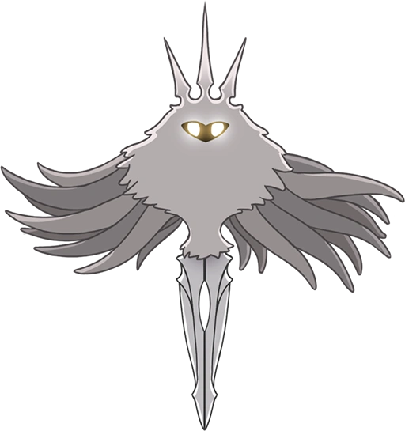

Site feito por: Davi
Feat: Daniel
Jogo feito por: Team Cherry
Resumo
Hollow Knight é um jogo eletrônico de ação e aventura lançado em 2017, desenvolvido e publicado pela Team Cherry. Ele se passa em um mundo subterrâneo chamado de "Hallownest", onde o jogador controla um personagem chamado de "Cavaleiro Vazio" em sua jornada para explorar o reino, derrotar inimigos e descobrir segredos ocultos. O jogo apresenta elementos de plataforma, combate, exploração e progressão não-linear, além de uma narrativa rica e complexa que é contada através de personagens misteriosos e de uma atmosfera sombria e melancólica.
História
A história de Hollow Knight é contada de maneira fragmentada e cabe ao jogador descobrir e interpretar os detalhes. Em resumo, o jogo se passa no reino subterrâneo de Hallownest, que foi uma vez um lugar próspero e cheio de vida, mas que agora está em ruínas e cheio de criaturas hostis. O Cavaleiro Vazio é um dos personagens que habitam esse mundo e ele parte em uma jornada para descobrir o que aconteceu com o reino e tentar restaurá-lo. Ao longo do jogo, o jogador encontra vários personagens que ajudam a contar a história de Hallownest. Descobre-se que o reino foi dominado por um ser chamado de "O Radiante", que buscava controlar um material chamado de "Escaravelho", que tinha propriedades mágicas poderosas. No entanto, esse poder acabou corrompendo O Radiante e gerando uma série de eventos catastróficos que levaram à queda de Hallownest. O jogador deve explorar diferentes áreas do reino, enfrentando inimigos e chefes desafiadores para coletar poderes e habilidades que permitem avançar em áreas anteriormente inacessíveis. No final do jogo, o Cavaleiro Vazio enfrenta O Radiante em uma batalha épica para determinar o destino de Hallownest. A história tem várias reviravoltas e um final emocionante que dependde das escolhas do jogador.
Personagens principais:

A Hornet é uma personagem importante e recorrente no jogo Hollow Knight. Ela é uma insetoide misteriosa e poderosa, com uma aparência semelhante à de uma vespa. A Hornet desempenha vários papéis ao longo da história, mas seu papel central é o de desafiante e guia para o protagonista, o Cavaleiro Vazio.

O personagem principal de Hollow Knight, conhecido como o Cavaleiro Vazio, é um protagonista silencioso e misterioso. Ele é uma criatura pequena e encapuzada, com um corpo semelhante ao de um inseto.

"The Hollow Knight" é escolhido como o recipiente para aprisionar O Radiante devido à sua natureza vazia, o que o torna resistente à influência maligna. Ele é submetido a um ritual de ligação para se tornar uma prisão viva, selando O Radiante dentro de si.
A Radiância é um dos principais antagonistas do jogo Hollow Knight. Ela é uma entidade poderosa e a fonte da infecção que assola o reino de Hallownest. A Radiância é representada como uma figura radiante e brilhante, com asas flamejantes e uma aparência imponente.

Os Sonhadores são seres poderosos que estão adormecidos e aprisionados em sonhos profundos, Eles foram aprisionados por um evento misterioso chamado "Cerimônia do Sonho", que ocorreu muito antes dos eventos do jogo. Essa cerimônia foi realizada para selar o Radiance.
Hollow Knight apresenta uma variedade de personagens secundários, cada um com sua própria história, personalidade e papel no mundo do jogo. Esses personagens desempenham diferentes funções, como fornecer informações, oferecer serviços, vender itens ou até mesmo dar missões ao jogador. Alguns são amigáveis e ajudam o protagonista, enquanto outros podem ser hostis ou indiferentes.
Game-Review
Eu, escritor e criador desse site, zerei hollow knight diversas vezes fazendo todos os finais do jogo (incluindo o da DLC GodMaster), e posso afirmar com certeza que: Hollow knight faz muito bem seu trabalho e é um dos melhores jogos estilo metroidvania que eu ja joguei, ou até mesmo o melhor jogo que eu ja joguei. Mesmo assim, ainda há pontos negativos e positivos sobre que eu gostaria de citar aqui.
Pontos positivos:
- - Ele é altamente rejogável por conta dos diferentes finais alternativos, segredos, e modos de jogo diferentes.
- - Contém uma história fragmentada e rica, divertida de descobrir.
- - Tem gameplay fluida e graficos agradaveis.
- - Há personagens com rica história e profundidade interessantes.
- - Controles e jogabilidade faceis.
- - Trilha sonora.
Pontos Negativos:
- - Contendo um mapa imenso, a movimentação do jogo pode se tornar algumas vezes chata e entediante.
- - Você pode muitas vezes se encontrar perdido no meio do jogo.
- - A primeira vez pode ser confuso.
- - Alguns ruídos e sons do jogo podem ser desconfortáveis.
-
jogabilidade:

Graficos:
Controles:
Soundtrack:
Nota final:
 4.5
4.5
Hollow Knight na Steam